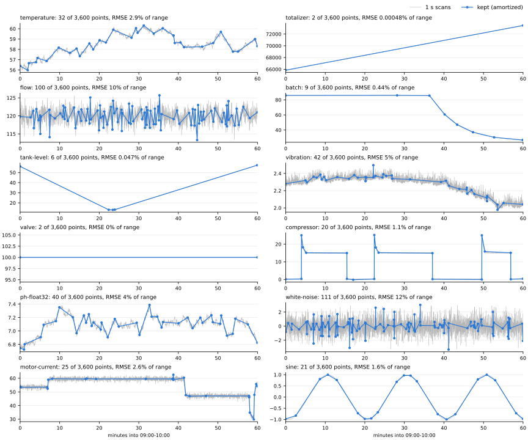
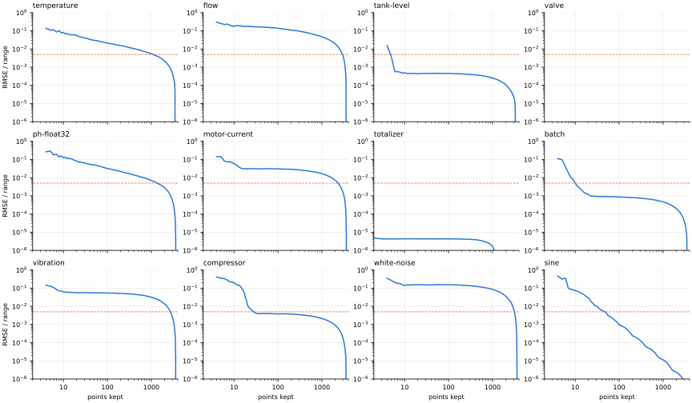
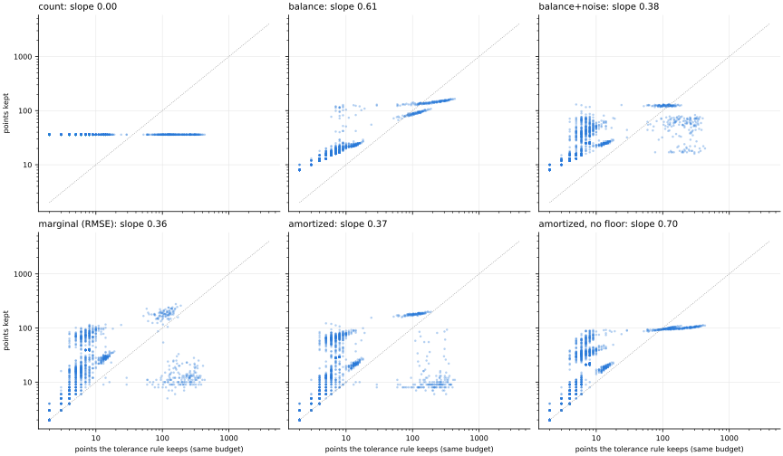
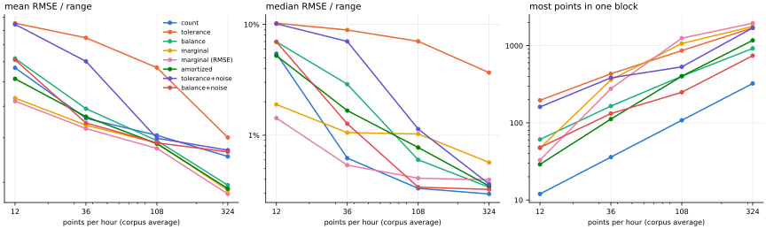
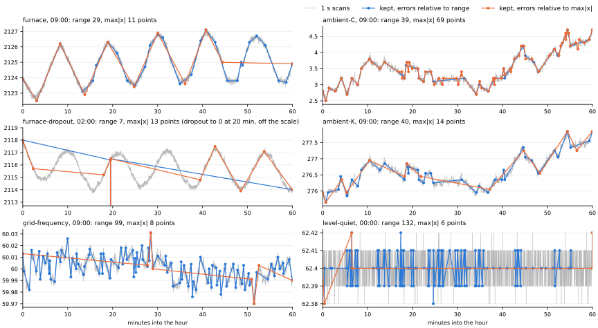

fluxprune keeps a subset of a series' points, read as straight lines between them, for storage and processing rather than for compression: the first and last points (to stitch blocks), the minimum and maximum, then whichever points lower the time-weighted RMSE of the interpolation most. One O(n log n) pass ranks every point (bottom-up: repeatedly drop the point whose removal costs least, exact integrals per input segment); a rule picks how many to keep from the error curve that pass records; then 2 O(n) refinement passes move each kept point to where it fits best between its neighbours.
Data: 12 synthetic signals × 5 days of 1 s scans, cut into 1 h storage blocks (1,440 blocks of 3,600 points; tslab/prune/signals.py). Errors are relative to each block's range (max − min). Regenerate with uv run python make_prune_report.py in experimental/.
| signal | what it is |
|---|---|
| temperature | Daily cycle + slow drift (τ 30 min) + noise σ 0.03 °C, 0.01 °C resolution |
| flow | Setpoint steps (6/day) through a 60 s lag + process noise (σ 1.5, τ 5 s) + measurement noise σ 0.8, 0.1 resolution: noise above CompDev |
| tank-level | Fill and drain ramps (0.01–0.05 %/s) between holds + noise σ 0.02 %, 0.01 % resolution |
| valve | Position commands in 5 % steps (30/day), 2 %/s travel, no noise, 0.1 % resolution |
| ph-float32 | pH 7 + slow drift (τ 10 min) + noise σ 0.004, stored as float32 (not decimal) |
| motor-current | Load steps (24/day) through a 10 s lag + noise σ 1 A, 0.01 A resolution: CompDev far below the noise, so most scans are archived |
| totalizer | Flow totalizer: integral of a stepped flow, 0.1 resolution (piecewise straight) |
| batch | Batch reactor: heat ramp, soak, cool, ~2 h cycles + noise σ 0.05 |
| vibration | Vibration RMS: slow drift + rare bursts (seconds to minutes) + noise |
| compressor | Compressor power: on/off cycles (5-15 min) with start-up overshoot + noise |
| white-noise | White noise only, σ 1 |
| sine | One 20 min sine, nothing else (smooth: error falls as k⁻² with no floor) |

Every method picks the same number of points per 1 h block (day 0, every 4th hour, so 6 blocks per signal); cells are the geometric mean of the block's RMSE over fluxprune's (refined). fluxprune and top-down keep the required points within k; swinging door's CompDev is searched for k points (the nearest count at or above k); LTTB and min/max buckets are the plotting downsamplers; Visvalingam-Whyatt (cartography's line simplification) is bottom-up by triangle area, and + refine adds fluxprune's two refinement passes to its points.
| method | temperature | flow | tank-level | valve | ph-float32 | motor-current | totalizer | batch | vibration | compressor | white-noise | sine | all (RMSE) | all (max error) |
|---|---|---|---|---|---|---|---|---|---|---|---|---|---|---|
| fluxprune | 1.00 | 1.00 | 1.00 | exact | 1.00 | 1.00 | 1.00 | 1.00 | 1.00 | 1.00 | 1.00 | 1.00 | 1.00 | 1.00 |
| bottom-up (nested) | 1.36 | 1.33 | 1.16 | exact | 1.33 | 1.29 | 1.36 | 1.29 | 1.11 | 1.11 | 1.11 | 1.23 | 1.24 | 1.14 |
| top-down | 1.24 | 0.98 | 1.23 | exact | 1.33 | 1.30 | 0.97 | 2.11 | 1.06 | 1.49 | 1.05 | 2.87 | 1.35 | 1.21 |
| Visvalingam-Whyatt | 1.64 | 1.87 | 1.80 | exact | 1.53 | 2.22 | 1.63 | 1.46 | 1.74 | 1.44 | 2.23 | 1.11 | 1.67 | 1.39 |
| Visvalingam-Whyatt + refine | 1.04 | 1.09 | 1.04 | exact | 1.08 | 1.27 | 0.98 | 0.96 | 1.08 | 1.06 | 1.21 | 0.99 | 1.07 | 1.08 |
| swinging door | 1.78 | 1.60 | 1.37 | exact | 1.76 | 1.47 | 1.21 | 1.48 | 1.42 | 1.50 | 1.24 | 1.42 | 1.47 | 1.05 |
| LTTB | 1.72 | 1.93 | 2.28 | ∞ | 1.68 | 2.60 | 1.58 | 2.77 | 2.42 | 2.79 | 2.38 | 1.18 | 2.06 | 1.53 |
| min/max buckets | 1.83 | 2.38 | 32.05 | ∞ | 1.88 | 3.51 | 6.67 | 17.23 | 2.59 | 2.31 | 3.01 | 1.43 | 3.81 | 2.67 |
| uniform | 1.63 | 1.25 | 22.94 | ∞ | 1.61 | 1.91 | 5.47 | 7.58 | 1.36 | 1.75 | 1.47 | 1.68 | 2.56 | 2.35 |
| method | temperature | flow | tank-level | valve | ph-float32 | motor-current | totalizer | batch | vibration | compressor | white-noise | sine | all (RMSE) | all (max error) |
|---|---|---|---|---|---|---|---|---|---|---|---|---|---|---|
| fluxprune | 1.00 | 1.00 | 1.00 | exact | 1.00 | 1.00 | 1.00 | 1.00 | 1.00 | 1.00 | 1.00 | 1.00 | 1.00 | 1.00 |
| bottom-up (nested) | 1.31 | 1.30 | 1.22 | exact | 1.32 | 1.22 | 1.29 | 1.22 | 1.15 | 1.14 | 1.23 | 1.21 | 1.24 | 1.24 |
| top-down | 1.39 | 1.04 | 0.99 | exact | 1.45 | 1.03 | 0.95 | 1.11 | 1.02 | 31.75 | 1.00 | 1.78 | 1.57 | 1.55 |
| Visvalingam-Whyatt | 1.57 | 1.68 | 1.86 | exact | 1.59 | 1.98 | 1.54 | 1.82 | 1.63 | 2.25 | 1.91 | 1.65 | 1.76 | 1.59 |
| Visvalingam-Whyatt + refine | 1.02 | 1.02 | 1.01 | exact | 1.03 | 1.04 | 0.98 | 1.08 | 1.00 | 1.37 | 1.01 | 1.03 | 1.05 | 1.14 |
| swinging door | 1.68 | 1.50 | 1.28 | exact | 1.74 | 1.28 | 1.08 | 1.53 | 1.35 | 1.28 | 1.27 | 1.27 | 1.38 | 1.13 |
| LTTB | 1.88 | 1.89 | 2.09 | ∞ | 1.80 | 2.23 | 1.46 | 2.37 | 2.38 | 34.82 | 2.07 | 1.30 | 2.51 | 2.22 |
| min/max buckets | 1.93 | 2.26 | 8.20 | ∞ | 1.89 | 2.82 | 3.07 | 8.30 | 2.54 | 40.64 | 2.59 | 4.72 | 4.16 | 3.79 |
| uniform | 1.68 | 1.39 | 4.20 | ∞ | 1.75 | 1.56 | 2.00 | 4.61 | 1.40 | 36.50 | 1.40 | 1.55 | 2.54 | 2.90 |
| method | temperature | flow | tank-level | valve | ph-float32 | motor-current | totalizer | batch | vibration | compressor | white-noise | sine | all (RMSE) | all (max error) |
|---|---|---|---|---|---|---|---|---|---|---|---|---|---|---|
| fluxprune | 1.00 | 1.00 | 1.00 | exact | 1.00 | 1.00 | 1.00 | 1.00 | 1.00 | 1.00 | 1.00 | 1.00 | 1.00 | 1.00 |
| bottom-up (nested) | 1.32 | 1.31 | 1.27 | exact | 1.31 | 1.25 | 1.20 | 1.26 | 1.18 | 1.23 | 1.26 | 1.13 | 1.25 | 1.18 |
| top-down | 1.58 | 1.17 | 1.01 | exact | 1.46 | 1.01 | 0.93 | 1.01 | 1.02 | 14.22 | 1.01 | 1.16 | 1.42 | 1.50 |
| Visvalingam-Whyatt | 1.54 | 1.65 | 1.74 | exact | 1.54 | 1.75 | 1.44 | 1.70 | 1.56 | 1.72 | 1.75 | 1.30 | 1.60 | 1.47 |
| Visvalingam-Whyatt + refine | 1.03 | 1.05 | 1.02 | exact | 1.03 | 1.02 | 0.99 | 1.01 | 1.01 | 1.04 | 1.01 | 1.11 | 1.03 | 1.08 |
| swinging door | 1.63 | 1.43 | 1.27 | exact | 1.68 | 1.29 | 1.07 | 1.35 | 1.30 | 1.30 | 1.27 | 1.06 | 1.32 | 1.01 |
| LTTB | 1.83 | 1.84 | 1.87 | ∞ | 1.80 | 1.88 | 1.38 | 1.91 | 2.12 | 22.28 | 1.90 | 1.23 | 2.23 | 2.15 |
| min/max buckets | 1.89 | 2.13 | 2.39 | ∞ | 1.97 | 2.47 | 1.36 | 2.41 | 2.38 | 22.35 | 2.36 | 4.63 | 2.85 | 2.83 |
| uniform | 1.78 | 1.51 | 1.72 | ∞ | 1.80 | 1.51 | 1.64 | 1.61 | 1.42 | 24.83 | 1.49 | 1.28 | 2.02 | 2.32 |
On the same whole blocks (3,600 points), the optimal choice of k points that include the required ones (dynamic programming, O(n²k): about 2 s a block, an oracle, not a method); each greedy method's RMSE over the optimum's, geometric mean.
| method | k = 12 | k = 36 | k = 108 |
|---|---|---|---|
| fluxprune | 1.05 (worst 1.25) | 1.04 (worst 1.38) | 1.06 (worst 1.40) |
| bottom-up (nested) | 1.30 (worst 1.63) | 1.29 (worst 1.60) | 1.32 (worst 1.53) |
| top-down | 1.41 (worst 4.08) | 1.64 (worst 66.18) | 1.50 (worst 74.09) |
What a rule sees: the relative RMSE of keeping k points (the ranking, before refinement), one hour of each signal. Smooth signals fall as k⁻² (sine), random walks as k⁻½ (temperature, pH), and white noise hardly at all until most points are kept; a step or ramp signal falls off a cliff and then sits on its noise. The dashed line is 0.5% for scale.

Each rule's one parameter is set so that all 1,440 blocks together keep 36 points per hour on average (1% of the scans), except knee, which can't be calibrated (its total is what its α gives). Cells are the mean points kept per hour and, below, the geometric mean RMSE of the blocks. The corpus columns are the mean points per block, the mean and median block RMSE, and the most points one block got.
| rule | what it does | parameter | temperature | flow | tank-level | valve | ph-float32 | motor-current | totalizer | batch | vibration | compressor | white-noise | sine | points/h | mean | median | max k |
|---|---|---|---|---|---|---|---|---|---|---|---|---|---|---|---|---|---|---|
| count | K points per hour | K = 36 | 36 3% | 36 9.7% | 36 0.033% | 36 2.3e-14% | 36 3.4% | 36 6.9% | 36 0.0004% | 36 0.085% | 36 3.7% | 36 0.36% | 36 11% | 36 0.61% | 36.0 | 3.6% | 0.62% | 36 |
| tolerance | fewest points within RMSE ε | ε = 0.131 | 7 9.2% | 92 9.8% | 4 2.6% | 4 4.7e-05% | 8 9.5% | 88 10% | 2 0.009% | 5 3.7% | 7 8.7% | 14 9.4% | 194 11% | 8 7.6% | 36.0 | 7.5% | 8.9% | 432 |
| balance | √(K·k_ε), K = the budget per hour: the geometric mean of the two | ε = 0.105 | 18 4.4% | 75 8.8% | 12 0.035% | 11 3.2e-14% | 19 5% | 71 6.8% | 8 0.00051% | 13 0.15% | 23 4% | 23 0.6% | 141 11% | 17 2.8% | 36.0 | 3.9% | 2.9% | 165 |
| marginal | minimise e² + λk | λ = 2.87e-05 | 45 2.6% | 216 6.9% | 5 0.072% | 4 2e-06% | 52 2.8% | 15 7% | 2 0.00093% | 8 0.43% | 21 4.3% | 21 0.71% | 15 12% | 27 1% | 36.0 | 3.4% | 1.1% | 361 |
| marginal (RMSE) | minimise e + λk: the least mean RMSE for the total | λ = 0.000203 | 71 2.1% | 140 7.7% | 6 0.05% | 5 6.5e-14% | 78 2.3% | 14 7.1% | 2 0.00069% | 14 0.13% | 21 3.9% | 28 0.41% | 13 12% | 39 0.52% | 36.0 | 3.3% | 0.54% | 277 |
| amortized | first k with e / (points added) < θ / hours | θ = 0.00145 | 33 3.1% | 86 8.5% | 5 0.064% | 4 2.1e-06% | 36 3.4% | 69 6.8% | 2 0.00093% | 8 0.41% | 49 4% | 19 1.5% | 99 11% | 22 1.6% | 36.0 | 3.6% | 1.7% | 112 |
| tolerance+noise | tolerance, ε raised to the noise σ | ε = 0.0968 | 10 7% | 223 7.6% | 4 1.8% | 4 2.2e-05% | 12 7.1% | 47 8.8% | 2 0.0047% | 5 2.7% | 24 7% | 15 6.2% | 78 11% | 8 7.4% | 36.0 | 6% | 7% | 383 |
| balance+noise | balance, ε raised to the noise σ | ε = 0.039 | 39 2.9% | 112 8% | 12 0.035% | 12 2.2e-14% | 43 3.1% | 49 6.8% | 9 0.00051% | 14 0.13% | 43 3.8% | 25 0.49% | 49 11% | 25 1.2% | 36.0 | 3.4% | 1.3% | 132 |
| knee | first k where 2k points don't improve e by 2^α (α = 0.25, not calibrated) | α = 0.25 | 3061 1.3e-12% | 8 12% | 8 0.039% | 5 2.3e-14% | 2882 1.3e-13% | 9 7.6% | 3 0.00063% | 19 0.094% | 11 4.5% | 28 0.44% | 8 13% | 3600 5.7e-18% | 803.4 | 3.7% | 0.083% | 3,600 |
Each rule's points per block against the tolerance rule's at the same budget (the tolerance rule follows complexity linearly by definition), every block of the corpus, and the slope of a log-log fit: 0 is a fixed count, 1 the tolerance, ½ the plain geometric mean. All slopes: count 0.00, tolerance 1.00, balance 0.61, marginal 0.47, marginal (RMSE) 0.36, amortized 0.70, tolerance+noise 0.82, balance+noise 0.38.

The same calibration at other averages: mean / median block RMSE and, below, the most points one block got.
| rule | 12/h | 36/h | 108/h | 324/h |
|---|---|---|---|---|
| count | 5.7% / 5.4% max k 12 | 3.6% / 0.62% max k 36 | 3.1% / 0.33% max k 108 | 2.5% / 0.3% max k 324 |
| tolerance | 8.5% / 10% max k 196 | 7.5% / 8.9% max k 432 | 5.7% / 7% max k 864 | 3% / 3.7% max k 1,700 |
| balance | 6.2% / 7% max k 61 | 3.9% / 2.9% max k 165 | 2.9% / 0.6% max k 402 | 1.9% / 0.34% max k 921 |
| marginal | 4.3% / 1.9% max k 47 | 3.4% / 1.1% max k 361 | 2.9% / 1% max k 1,066 | 1.9% / 0.57% max k 1,773 |
| marginal (RMSE) | 4.2% / 1.4% max k 33 | 3.3% / 0.54% max k 277 | 2.7% / 0.41% max k 1,250 | 1.8% / 0.4% max k 1,953 |
| amortized | 5.1% / 5.2% max k 29 | 3.6% / 1.7% max k 112 | 2.8% / 0.77% max k 402 | 1.9% / 0.35% max k 1,171 |
| tolerance+noise | 8.4% / 10% max k 161 | 6% / 7% max k 383 | 3% / 1.1% max k 531 | 2.7% / 0.36% max k 1,698 |
| balance+noise | 6.1% / 7% max k 48 | 3.4% / 1.3% max k 132 | 2.9% / 0.34% max k 249 | 2.6% / 0.32% max k 742 |

A rule that adapts to the data, not to how it was stored, should keep about as many points of an hour sampled every 10 s as of the same hour sampled every second (ratio 1 when the signal is captured at both rates; noise can't be), and about as many in one 12 h block as in twelve 1 h blocks (count and balance scale K with the block's hours). Median over day 0's hours of k at 10 s over k at 1 s:
| rule | temperature | flow | tank-level | valve | ph-float32 | motor-current | totalizer | batch | vibration | compressor | white-noise | sine |
|---|---|---|---|---|---|---|---|---|---|---|---|---|
| count | 1.00 | 1.00 | 1.00 | 1.00 | 1.00 | 1.00 | 1.00 | 1.00 | 1.00 | 1.00 | 1.00 | 1.00 |
| tolerance | 1.00 | 0.46 | 1.00 | 1.00 | 1.00 | 0.64 | 1.00 | 1.00 | 1.00 | 1.00 | 0.30 | 1.25 |
| balance | 1.00 | 0.62 | 1.00 | 1.00 | 1.00 | 0.42 | 1.00 | 0.96 | 1.00 | 1.00 | 0.39 | 1.18 |
| marginal | 0.94 | 0.78 | 1.00 | 1.00 | 0.98 | 13.20 | 1.00 | 1.00 | 4.66 | 0.98 | 17.17 | 0.89 |
| marginal (RMSE) | 1.18 | 1.62 | 1.00 | 1.00 | 1.07 | 23.85 | 1.00 | 1.00 | 9.30 | 0.91 | 25.25 | 1.10 |
| amortized | 0.94 | 0.82 | 1.00 | 1.00 | 0.94 | 0.83 | 1.00 | 0.95 | 0.91 | 0.98 | 0.80 | 0.91 |
| tolerance+noise | 1.00 | 0.10 | 1.00 | 1.00 | 1.00 | 0.38 | 1.00 | 1.00 | 1.00 | 1.00 | 0.22 | 1.22 |
| balance+noise | 0.91 | 0.25 | 1.00 | 1.00 | 0.88 | 0.50 | 1.00 | 1.00 | 0.69 | 1.00 | 0.46 | 0.96 |
| knee | 0.10 | 1.07 | 1.00 | 1.00 | 0.10 | 1.04 | 1.00 | 1.11 | 0.97 | 11.21 | 1.00 | 0.10 |
k of a 12 h block over the sum of k of its twelve 1 h blocks (day 0, mean of the two halves):
| rule | temperature | flow | tank-level | valve | ph-float32 | motor-current | totalizer | batch | vibration | compressor | white-noise | sine |
|---|---|---|---|---|---|---|---|---|---|---|---|---|
| count | 1.00 | 1.00 | 1.00 | 1.00 | 1.00 | 1.00 | 1.00 | 1.00 | 1.00 | 1.00 | 1.00 | 1.00 |
| tolerance | 0.09 | 0.00 | 0.29 | 0.23 | 0.15 | 0.01 | 0.12 | 0.42 | 0.07 | 0.79 | 0.00 | 0.78 |
| balance | 0.31 | 0.06 | 0.56 | 0.54 | 0.47 | 0.06 | 0.36 | 0.68 | 0.14 | 0.91 | 0.75 | 0.93 |
| marginal | 0.10 | 0.01 | 0.43 | 0.45 | 0.18 | 0.17 | 0.17 | 0.44 | 0.05 | 0.73 | 0.09 | 0.67 |
| marginal (RMSE) | 0.07 | 0.01 | 0.40 | 0.46 | 0.12 | 0.19 | 0.23 | 0.38 | 0.12 | 0.64 | 0.09 | 0.62 |
| amortized | 0.47 | 0.26 | 0.44 | 0.51 | 0.63 | 0.28 | 0.25 | 0.59 | 0.08 | 0.83 | 0.83 | 0.92 |
| tolerance+noise | 0.10 | 0.00 | 0.30 | 0.27 | 0.26 | 0.01 | 0.11 | 0.45 | 0.02 | 0.82 | 0.48 | 0.90 |
| balance+noise | 0.36 | 0.22 | 0.63 | 0.64 | 0.54 | 0.15 | 0.35 | 0.68 | 0.11 | 0.92 | 0.56 | 0.97 |
| knee | 1.27 | 0.13 | 0.42 | 0.55 | 0.00 | 0.24 | 0.25 | 0.37 | 0.45 | 0.02 | 0.09 | 0.00 |
Errors so far are relative to each block's range, so a block's precision follows its own range whatever the units or the offset: an hour of furnace that moves 4 °F around 2,115 °F gets the same relative precision as an hour of a valve that moves 0-100%. The alternatives are the block's largest absolute value, the geometric mean of the two, and a known span per series (here each signal's range over all its days, as a historian's per-tag span would give, but which a store that knows nothing of the series lacks). The ranking doesn't depend on the scale, only the rules' thresholds do. Six more signals where it matters:
| signal | what it is |
|---|---|
| furnace | Furnace temperature, °F: setpoints 2100-2130 with ramps, control cycling ±0.3-1.5 °F, 0.1 °F steps |
| furnace-dropout | The furnace with 6 thermocouple dropouts a day (reads 0 for 2-20 s) |
| grid-frequency | Grid frequency, Hz: 60 ± ~10 mHz, 4 generator trips a day (−40 to −150 mHz), 1 mHz steps |
| ambient-C | Outdoor temperature, °C: −3 to 9 over the day, weather drift, 0.1 °C steps (crosses zero) |
| ambient-K | The same ambient temperature in kelvin (+273.15) |
| level-quiet | Tank level, %: held at 62.4 (±1 step of 0.01 dither) but for 3 fill/draw cycles a day |
Each rule and scale calibrated to 36 points per hour over all 2,160 blocks of the 18 signals (5 days each). Cells are the mean points kept per hour and, below, the mean RMSE relative to the signal's span: a measure that doesn't depend on the units, the offset or the block, so the scales can be compared (the furnace with dropouts is measured off its dropouts). The last row is the least mean RMSE over span possible for the total, which needs the span.
| rule | errors relative to | temperature | flow | tank-level | valve | ph-float32 | motor-current | totalizer | batch | vibration | compressor | white-noise | sine | furnace | furnace-dropout | grid-frequency | ambient-C | ambient-K | level-quiet | mean | worst signal | max k |
|---|---|---|---|---|---|---|---|---|---|---|---|---|---|---|---|---|---|---|---|---|---|---|
| tolerance | range | 7 2% | 79 1.9% | 4 3.3% | 4 1.4% | 8 5.1% | 63 3.7% | 2 0.05% | 5 4.7% | 7 1.3% | 13 9.8% | 127 8.6% | 8 7.6% | 10 1.2% | 9 32% | 22 3.6% | 6 1.4% | 6 1.4% | 270 0.56% | 5% | 32% | 469 |
| tolerance | √(range·max|x|) | 4 4% | 4 5% | 4 4.7% | 3 2.1% | 4 12% | 4 7.5% | 2 0.07% | 4 7.3% | 4 1.7% | 13 11% | 568 6.9% | 8 7.6% | 4 3.8% | 4 46% | 4 11% | 5 2% | 4 2.6% | 4 2% | 7.6% | 46% | 793 |
| tolerance | max|x| | 4 4% | 4 5.2% | 3 5.8% | 3 4.2% | 4 12% | 4 9.2% | 2 0.072% | 4 14% | 4 2.8% | 10 16% | 573 6.8% | 8 7.6% | 4 3.8% | 4 67% | 4 11% | 4 2.4% | 4 2.6% | 4 2.1% | 9.7% | 67% | 813 |
| tolerance | span (known) | 4 4% | 4 4.5% | 4 3.3% | 4 1.8% | 6 5.9% | 5 6.1% | 2 0.084% | 5 3.1% | 4 1.7% | 16 4.9% | 558 6.9% | 10 6.5% | 4 3.4% | 5 3.4% | 5 6.6% | 4 2.6% | 4 2.6% | 4 0.91% | 3.8% | 6.9% | 616 |
| balance | range | 18 0.93% | 74 1.5% | 12 0.022% | 11 0.00028% | 19 2.6% | 70 2.2% | 8 1.3e-05% | 13 0.13% | 22 0.31% | 23 0.6% | 138 8.4% | 17 2.8% | 19 0.4% | 18 0.56% | 36 2.6% | 16 0.6% | 16 0.6% | 115 0.027% | 1.4% | 8.4% | 175 |
| balance | √(range·max|x|) | 14 1.1% | 58 1.6% | 12 0.022% | 12 9.6e-15% | 17 2.8% | 78 2.2% | 8 1.3e-05% | 14 0.11% | 21 0.3% | 25 0.49% | 276 7.9% | 27 1.1% | 12 0.71% | 13 0.75% | 12 3.9% | 25 0.5% | 12 0.73% | 12 0.028% | 1.3% | 7.9% | 285 |
| balance | max|x| | 12 1.2% | 23 1.7% | 13 0.021% | 12 9.7e-15% | 14 3.1% | 49 2.2% | 8 1.3e-05% | 15 0.1% | 16 0.31% | 26 0.46% | 319 7.7% | 34 0.7% | 12 0.71% | 13 0.73% | 12 3.9% | 46 0.43% | 12 0.73% | 12 0.028% | 1.3% | 7.7% | 325 |
| balance | span (known) | 16 1% | 19 1.7% | 12 0.022% | 12 9.6e-15% | 34 1.8% | 82 2.2% | 8 1.3e-05% | 15 0.1% | 13 0.32% | 25 0.48% | 269 7.9% | 28 0.99% | 15 0.47% | 16 0.5% | 48 2.2% | 13 0.7% | 13 0.69% | 12 0.028% | 1.2% | 7.9% | 272 |
| amortized | range | 32 0.67% | 81 1.5% | 5 0.053% | 4 0.029% | 34 1.8% | 64 2.2% | 2 0.00022% | 8 0.37% | 46 0.33% | 18 1.5% | 92 8.6% | 21 1.7% | 27 0.34% | 23 1.1% | 57 2% | 30 0.45% | 30 0.45% | 74 0.035% | 1.3% | 8.6% | 115 |
| amortized | √(range·max|x|) | 23 0.79% | 66 1.5% | 5 0.039% | 4 0.018% | 29 2% | 65 2.2% | 2 0.00022% | 9 0.25% | 43 0.3% | 21 0.78% | 261 8% | 28 0.98% | 11 0.87% | 10 1.5% | 11 4% | 41 0.4% | 12 0.71% | 8 0.037% | 1.4% | 8% | 295 |
| amortized | max|x| | 12 1.2% | 31 1.7% | 5 0.039% | 4 0.018% | 17 2.7% | 36 2.2% | 2 0.0016% | 9 0.26% | 23 0.31% | 21 0.72% | 390 7.5% | 34 0.7% | 4 2.8% | 5 3% | 4 9% | 38 0.42% | 5 1.4% | 4 0.069% | 1.9% | 9% | 445 |
| amortized | span (known) | 26 0.73% | 51 1.6% | 5 0.036% | 4 0.019% | 49 1.5% | 65 2.2% | 2 0.0022% | 10 0.19% | 12 0.33% | 22 0.65% | 232 8.1% | 29 0.94% | 16 0.41% | 17 0.45% | 62 1.9% | 19 0.54% | 19 0.54% | 5 0.042% | 1.1% | 8.1% | 242 |
| least mean RMSE | span (known) | 56 0.48% | 27 1.7% | 6 0.028% | 5 1e-14% | 113 0.95% | 14 2.3% | 2 9.7e-05% | 17 0.077% | 14 0.32% | 32 0.36% | 20 8.9% | 68 0.18% | 24 0.33% | 25 0.37% | 150 1.2% | 34 0.42% | 35 0.42% | 6 0.033% | 1% | 8.9% | 471 |

Block length: k of a 12 h block over the sum of k of its twelve 1 h blocks (all days), with θ / hours for the amortized rule. A ratio below 1 is partly right: twelve blocks keep twelve sets of required points, and a longer block can spend its points where they matter most.
| rule | errors relative to | temperature | flow | tank-level | valve | ph-float32 | motor-current | totalizer | batch | vibration | compressor | white-noise | sine | furnace | furnace-dropout | grid-frequency | ambient-C | ambient-K | level-quiet | geometric mean |
|---|---|---|---|---|---|---|---|---|---|---|---|---|---|---|---|---|---|---|---|---|
| amortized | range | 0.40 | 0.29 | 0.43 | 0.56 | 0.66 | 0.30 | 0.25 | 0.59 | 0.09 | 0.83 | 0.83 | 0.93 | 0.39 | 0.06 | 0.53 | 0.28 | 0.28 | 0.01 | 0.30 |
| amortized | √(range·max|x|) | 0.57 | 0.49 | 0.44 | 0.57 | 0.76 | 0.50 | 0.25 | 0.65 | 0.17 | 0.84 | 0.87 | 0.91 | 0.48 | 0.15 | 0.47 | 0.39 | 0.43 | 0.11 | 0.43 |
| amortized | max|x| | 0.71 | 0.75 | 0.44 | 0.57 | 0.79 | 0.76 | 0.26 | 0.66 | 0.31 | 0.85 | 0.89 | 0.94 | 0.26 | 0.30 | 0.16 | 0.53 | 0.42 | 0.19 | 0.48 |
| amortized | span (known) | 0.88 | 0.93 | 0.44 | 0.57 | 0.94 | 0.95 | 0.25 | 0.70 | 0.71 | 0.84 | 0.99 | 0.92 | 0.84 | 0.85 | 0.95 | 0.84 | 0.84 | 0.22 | 0.70 |
| least mean RMSE | span (known) | 0.18 | 0.07 | 0.38 | 0.52 | 0.19 | 0.23 | 0.26 | 0.44 | 0.24 | 0.63 | 0.05 | 0.36 | 0.49 | 0.50 | 0.06 | 0.23 | 0.22 | 0.16 | 0.23 |
The rmse pass (θ = 0.0015) alone, then with max_error set to an engineer's value per signal (the historian tags' CompDev, otherwise about what matters), then with a safety cap of max_points = 360 per hour (10% of the scans) as well. The max_error pass splits each line between the rmse pass's points that strays further, by farthest reach (below). Swinging door at CompDev = max_error / 2 has the same guarantee: its doors pivot about the archived point, so at CompDev = max_error (last column) its line strays up to twice that. Cells: mean points per hour · the largest error of any block over max_error · mean RMSE over the signal's span; below, the share of blocks the cap bound (rmse_met or max_error_met false).
| signal | max_error | rmse pass | max_error | max_error, max_points 360 | swinging door, CompDev = max_error / 2 | swinging door, CompDev = max_error |
|---|---|---|---|---|---|---|
| temperature | 0.1 | 32 · 8 · 0.66% | 510 · 1 · 0.22% | 358 · 1.2 · 0.26% capped 100% | 1136 · 0.95 · 0.15% | 342 · 1.9 · 0.31% |
| flow | 1 | 84 · 9.8 · 1.5% | 1748 · 1 · 0.37% | 358 · 2.7 · 1.2% capped 100% | 2201 · 0.93 · 0.24% | 1363 · 1.9 · 0.6% |
| tank-level | 0.2 | 5 · 9 · 0.053% | 5 · 1 · 0.037% | 5 · 1 · 0.037% | 4 · 0.99 · 0.07% | 4 · 2 · 0.18% |
| valve | 0.5 | 4 · 20 · 0.029% | 5 · 1 · 5.7e-05% | 5 · 1 · 5.7e-05% | 5 · 1.4e-12 · 1e-14% | 4 · 2 · 0.018% |
| ph-float32 | 0.02 | 35 · 8.3 · 1.8% | 512 · 1 · 0.55% | 359 · 1.3 · 0.67% capped 100% | 1054 · 0.95 · 0.38% | 357 · 1.9 · 0.82% |
| motor-current | 0.2 | 67 · 28 · 2.2% | 3160 · 1 · 0.09% | 357 · 11 · 2.3% capped 100% | 3261 · 0.88 · 0.06% | 2958 · 1.8 · 0.16% |
| totalizer | 1 | 2 · 36 · 0.00022% | 2 · 0.99 · 2.6e-05% | 2 · 0.99 · 2.6e-05% | 2 · 0.98 · 6.1e-05% | 2 · 2 · 0.00018% |
| batch | 0.2 | 8 · 9.5 · 0.36% | 23 · 1 · 0.094% | 23 · 1 · 0.094% | 228 · 0.98 · 0.075% | 13 · 2 · 0.15% |
| vibration | 0.1 | 47 · 5.8 · 0.33% | 66 · 1 · 0.37% | 66 · 1 · 0.37% | 422 · 0.99 · 0.29% | 15 · 2 · 0.44% |
| compressor | 0.5 | 19 · 34 · 1.5% | 28 · 1 · 0.54% | 28 · 1 · 0.54% | 87 · 0.97 · 0.42% | 23 · 1.6 · 0.61% |
| white-noise | 1 | 95 · 5.2 · 8.6% | 1727 · 1 · 3.8% | 357 · 2.1 · 9.1% capped 100% | 2223 · 0.94 · 2.4% | 1333 · 1.9 · 6% |
| sine | 0.01 | 22 · 8.3 · 1.6% | 61 · 1 · 0.33% | 61 · 1 · 0.33% | 62 · 0.83 · 0.26% | 44 · 1.6 · 0.52% |
| furnace | 1 | 28 · 0.96 · 0.34% | 28 · 0.96 · 0.34% | 28 · 0.96 · 0.34% | 15 · 0.93 · 0.84% | 9 · 1.9 · 2.1% |
| furnace-dropout | 1 | 24 · 6.6 · 1.1% | 26 · 1 · 0.58% | 26 · 1 · 0.58% | 16 · 0.93 · 0.86% | 9 · 1.9 · 2.1% |
| grid-frequency | 0.005 | 58 · 7.6 · 2% | 282 · 1 · 1.2% | 282 · 1 · 1.2% | 597 · 0.97 · 0.85% | 178 · 1.9 · 1.8% |
| ambient-C | 0.2 | 30 · 2.1 · 0.45% | 50 · 1 · 0.43% | 50 · 1 · 0.43% | 148 · 0.99 · 0.37% | 26 · 1.9 · 0.73% |
| ambient-K | 0.2 | 30 · 2.4 · 0.45% | 49 · 1 · 0.43% | 49 · 1 · 0.43% | 111 · 0.99 · 0.39% | 27 · 1.9 · 0.72% |
| level-quiet | 0.1 | 77 · 1.2 · 0.035% | 77 · 0.98 · 0.035% | 77 · 0.98 · 0.035% | 2 · 0.99 · 0.082% | 2 · 2 · 0.15% |
| all | 37 · 36 · 1.3% | 464 · 1 · 0.52% | 138 · 11 · 0.99% | 643 · 0.99 · 0.43% | 373 · 2 · 0.97% |
How max_error is met. Each line between the rmse pass's points that strays further than max_error is split from its left end. Every scan after an anchor bounds the slope of a line from the anchor that passes within max_error of it, from below and above. Swinging door's rule ends the line at the first scan its chord can't reach. Farthest reach, fluxprune's, scans on while the bounds still overlap (some line could still pass every scan so far), notes the last scan whose own chord satisfies them, and when they cross makes that scan the next anchor: with noise, a scan after one the chord can't reach is often reachable again. Fewest points is the exact minimum (dynamic programming over every feasible chord). Cells: points per hour · RMSE over the span; the rmse pass's points the same in each column; below, the max_error pass's time per 1 h block.
| signal | swinging door's rule | farthest reach (fluxprune) | fewest points (exact) |
|---|---|---|---|
| temperature | 766 · 0.21% | 510 · 0.22% | 424 · 0.22% |
| flow | 1930 · 0.34% | 1748 · 0.37% | 1699 · 0.37% |
| tank-level | 5 · 0.037% | 5 · 0.037% | 5 · 0.037% |
| valve | 6 · 8.2e-05% | 6 · 8.2e-05% | 6 · 0.0034% |
| ph-float32 | 728 · 0.53% | 512 · 0.55% | 437 · 0.56% |
| motor-current | 3171 · 0.089% | 3160 · 0.09% | 3159 · 0.09% |
| totalizer | 3 · 2.9e-05% | 3 · 2.9e-05% | 3 · 2.8e-05% |
| batch | 72 · 0.088% | 23 · 0.094% | 20 · 0.091% |
| vibration | 170 · 0.33% | 66 · 0.37% | 62 · 0.37% |
| compressor | 33 · 0.5% | 28 · 0.54% | 28 · 0.54% |
| white-noise | 1950 · 3.5% | 1727 · 3.8% | 1660 · 3.9% |
| sine | 62 · 0.33% | 61 · 0.33% | 60 · 0.33% |
| furnace | 28 · 0.34% | 28 · 0.34% | 28 · 0.34% |
| furnace-dropout | 26 · 0.56% | 26 · 0.58% | 26 · 0.58% |
| grid-frequency | 378 · 1.1% | 282 · 1.2% | 246 · 1.2% |
| ambient-C | 67 · 0.41% | 50 · 0.43% | 46 · 0.43% |
| ambient-K | 63 · 0.42% | 49 · 0.43% | 45 · 0.43% |
| level-quiet | 77 · 0.035% | 77 · 0.035% | 77 · 0.034% |
| all | 542 · 0.5% 9 µs per block, at most 22 µs | 476 · 0.53% 13 µs per block, at most 44 µs | 457 · 0.54% 441 µs per block, at most 8,398 µs |
prune(refit=True) keeps the same times but replaces the values with those whose lines fit the input best in time-weighted L2 (a tridiagonal system over the kept points, O(n)), the first, last, minimum and maximum points (and the points around gaps) keeping their samples. Per signal, over 1 h blocks of all days with any error left: the geometric mean of the RMSE and the largest error with refit over without, at the rmse pass's points; and with max_error = the signal's guard value, the share of blocks where it still holds after the refit (it isn't checked again).
| signal | RMSE, refit / samples | largest error, refit / samples | max_error still holds |
|---|---|---|---|
| temperature | 0.99 | 1.00 | 0% |
| flow | 0.99 | 0.99 | 0% |
| tank-level | 0.98 | 1.00 | 99.2% |
| valve | 0.99 | 1.00 | 100% |
| ph-float32 | 0.99 | 0.99 | 0% |
| motor-current | 0.99 | 0.99 | 87.5% |
| totalizer | 0.96 | 0.98 | 100% |
| batch | 0.76 | 0.90 | 2.5% |
| vibration | 0.97 | 0.98 | 0% |
| compressor | 0.58 | 0.83 | 15% |
| white-noise | 0.99 | 0.99 | 0% |
| sine | 0.54 | 0.82 | 100% |
| furnace | 0.99 | 1.00 | 100% |
| furnace-dropout | 0.95 | 0.98 | 80.8% |
| grid-frequency | 0.99 | 0.99 | 0% |
| ambient-C | 0.97 | 0.98 | 0% |
| ambient-K | 0.97 | 0.99 | 0% |
| level-quiet | 0.95 | 0.93 | 100% |
| all | 0.90 | 0.96 | 41.4% |
The same rules with the same parameters on what each tag's swinging-door historian archived (tslab/common/historian.py: exception + swinging-door filters at the tag's CompDev), in 1 h blocks: points per hour in and kept (share of the archive), and below, the geometric-mean RMSE against the archive's own straight lines (relative to the block's range).
| tag | archived/h | count | tolerance | balance | tolerance+noise | balance+noise |
|---|---|---|---|---|---|---|
| temperature | 325 | 36 (11%) 2.8% | 7 (2.1%) 9.3% | 18 (5.4%) 4.4% | 9 (2.9%) 7.1% | 33 (10%) 3% |
| flow | 1362 | 36 (2.6%) 9.7% | 80 (5.9%) 10% | 71 (5.2%) 9% | 15 (1.1%) 12% | 24 (1.8%) 10% |
| tank-level | 2 | 2 (1e+02%) 1.5e-15% | 2 (97%) 2.2e-09% | 2 (98%) 3.6e-11% | 2 (99%) 2.9e-12% | 2 (1e+02%) 1.5e-15% |
| valve | 2 | 2 (1e+02%) 4.4e-16% | 2 (88%) 0.0029% | 2 (93%) 2e-05% | 2 (90%) 2.3e-05% | 2 (96%) 3e-08% |
| ph-float32 | 340 | 36 (11%) 3.3% | 8 (2.3%) 9.6% | 19 (5.6%) 5% | 11 (3.3%) 7.2% | 36 (11%) 3.3% |
| motor-current | 2957 | 36 (1.2%) 6.9% | 86 (2.9%) 10% | 71 (2.4%) 6.9% | 7 (0.25%) 10% | 17 (0.58%) 7% |
Apple M3, one thread, best of 3, 1 s scans. rank is the O(n log n) pass; prune adds picking k (O(n)) and the two O(n) refinement passes, shown as the time it adds to rank; max_error (1% of the range) adds the max_error pass on top of that, and refit the least-squares values, both also against rank. bench/prune.py has the same per call for more signals.
| signal | n | rank | per point | prune (rmse pass) | prune, max_error | prune, refit |
|---|---|---|---|---|---|---|
| temperature | 3,600 | 0.4 ms | 99 ns | +0.1 ms (+22%) | +0.1 ms (+39%) | +0.1 ms (+24%) |
| temperature | 43,200 | 6.5 ms | 151 ns | +1.3 ms (+20%) | +1.8 ms (+28%) | +1.5 ms (+24%) |
| temperature | 86,400 | 13.9 ms | 161 ns | +2.6 ms (+19%) | +3.3 ms (+24%) | +3.0 ms (+22%) |
| temperature | 1,000,000 | 310.8 ms | 311 ns | +32.4 ms (+10%) | +40.5 ms (+13%) | +36.1 ms (+12%) |
| white-noise | 3,600 | 0.4 ms | 108 ns | +0.1 ms (+28%) | +0.2 ms (+53%) | +0.1 ms (+31%) |
| white-noise | 43,200 | 6.7 ms | 155 ns | +1.2 ms (+18%) | +2.6 ms (+38%) | +1.5 ms (+22%) |
| white-noise | 86,400 | 14.6 ms | 169 ns | +2.3 ms (+16%) | +4.7 ms (+32%) | +2.7 ms (+18%) |
| white-noise | 1,000,000 | 316.9 ms | 317 ns | +27.9 ms (+9%) | +56.9 ms (+18%) | +30.3 ms (+10%) |
tslab/prune/rules.py, noise), regular or irregular times.error_per_point in the API.max_error guard (next).refit=True): least-squares values at the same kept times, the required points pinned to
their samples, lower the RMSE by about a tenth overall, almost all of it on smooth or step-like signals (sine,
compressor, batch: 0.5-0.8×) where a chord cuts a curve's corner; on noisy ones by 1-3%. It costs one O(n) tridiagonal
solve. The values are then no longer readings, and it doesn't mix with max_error: a least-squares line through noise
moves away from the scans that set the bound, so max_error still holds in only 41% of the blocks (none on the noisy
signals, all on the smooth or quiet ones). It stays an option to measure on real data. Choosing the times and the values together (a free-knot fit, or Imai and Iri's 1986 fewest-segments algorithm
for max_error with corners off the samples) could gain more and wasn't tried.The API. prune(t, x) returns the kept times and values, the RMSE and largest error they leave,
and rmse_met, max_error_met and max_points_met. The rmse pass is the default
(error_per_point θ = 0.0015 keeps ~1% of 1 s scans in 1 h blocks on this corpus; the error relative to
each block's range; θ / H for blocks of H hours keeps fewer per hour). Two optional guards bound it:
max_points, a hard cap, and max_error, the largest error of any scan in value units, which
also takes care of quiet blocks, glitches and the block length for a configured signal. θ = 0 with
max_points keeps the best max_points; θ = ∞ with max_error runs the max_error
pass alone. A run of non-finite values keeps its first point and the finite points around it (a forward hold), past
max_points if need be. The other rules on this page (count, tolerance, balance, noise floor, marginal,
knee) are experiments in tslab/prune/rules.py.